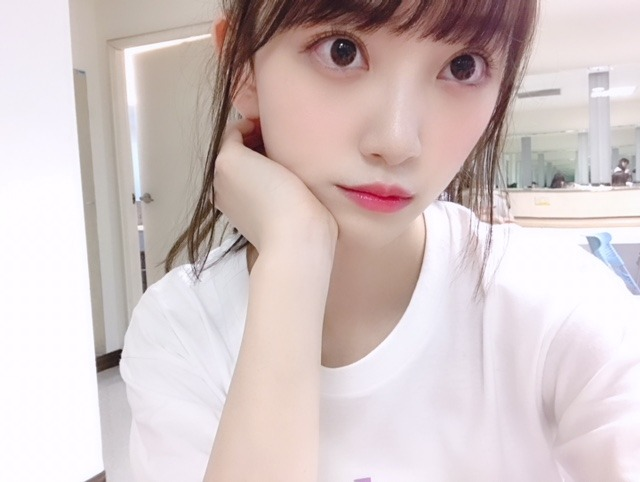

2019/0130Wed木苺になった
台北アリーナでのライブ！
楽しかったです☺︎
皆さん温かく迎えてくださり
ありがとうございました✨
謝謝✨

まだ行けてない国や県でも
ライブができたらいいな...
ステージ上から見える皆さんの笑顔が大好きだし
やっぱり歌って踊ることが好きなんだなぁって
ライブを重ねる度に思います
今この瞬間を大切にしなきゃ。
だか、ライブ1回1回を自分の最大限で表現していきたいですし
あとは、めいっぱい楽しむ！いつも楽しんでるけど！
バースデーライブも楽しみだなぁ
さてさて、、
わたしの趣味は、
美味しいお店巡り、
映画鑑賞、
温泉巡り、
美術館巡り で、巡りづくし。笑なのですが
やっぱり映画を観るのがとても好きで
観た映画の感想を
たまにブログに綴ってみようかなと思います！
そして
「第11回日本ブルーレイアンバサダー」にも
有難いことに選んでいただいたので
ブルーレイの良さ、映画の良さを少しでもたくさんの人に伝えていけるように頑張ります✨
美しい映像で観る映画は鳥肌が立ちます...
私の感想がきっかけで映画を見たよーなんて
言っていただけたら嬉しいな☺︎
早速、先日観た映画を！
755に少し感想を書いたのでそれを
引用しながら書き加えました
[ ワンダー君は太陽 ］
生まれつき障害を持った
男の子が学校に通いはじめ、
いろんなことが起こるヒューマン物語です
主役の男の子をはじめ
周りのクラスメイトや家族、
家族の恋人や友人 1人1人にもちゃんと
視点を置いて描かれているので
さまざまな方向からストーリーを見ることができて
色んな発見がありました
物事や現実を自分の"いつもどおりの角度"でみると、
それは変わらない"いつもどおりの景色"で、
でも時には違った方向から見つめてみる事が
私達には必要な事だなと思いました
例え結果や結末が予測しにくくて
怖いことがあるかもしれないけど
その一歩を踏み出す勇気が
自分や周りの人に
何か変化や希望を与えるかもしれない
人はみんなそれぞれ違う顔
違う声、違う性格で、
環境も違えば趣味も違い
もちろん考え方も人の数だけ違います
自分が人と違うのは当たり前で、
周りの人が自分と違うのも当たり前
だからこそ目の前の人と見つめあって
もっと相手のことを知って
理解して手を出して助け合っていくことができたらな...って思います
苦しいことや辛いことがあるのが人生で、
そこに立ち向かう人間は強くてかっこよくて
美しいものだなと再認識させられる
とても心が温まる映画でした
なんかね、
話の進み方や少しクスッと笑えるポイントが間にあったりする感じが私の好きなジャクリーンウィルソンさんが書く物語に似ていてとても惹きつけられました。
余談ですが
ワイルドスピードと
MEGザモンスターを観て思ったこと。
ジェイソンステイサムさんが素敵！
筋肉はもちろん
あの男らしい勇敢な性格に
優しさ溢れる笑顔
シュワルツェネッガーさん以来の衝撃...
特にMEGザモンスターで
女性がサメに食べられそうになった瞬間
躊躇なく海に飛び込んで助けにいく姿が
本当に男らしくて、、
女性は相変わらず
ミラジョボビッチさんと
アンハサウェイさんに憧れます
シンデレラやオーロラ姫のような
品もありながら強さもある素敵な女性
アクションもラブストーリーも似合うし
笑顔も真剣な表情も似合う...
映画ってどんどん引き込まれます✨
次はどんな映画を観ようかな？
あ、そうそう話が変わりますが
昨日はRed Velvet さんの
ライブを友達と観に行ったんだ〜
どっちが好きなの〜♪♪


人生で初めてうちわを持ってのライブ参加。
使い方がわからなくて、始まってから
そっとかばんに閉まってライブを観ました笑
パフォーマンスもMCも衣装も
ぜーんぶ可愛かった！
色んなアーティストさんのライブを観ると
私も頑張らなきゃって改めて思うし
皆さんに会いたくなる...
あ、今日23:45〜
レコメン！聴いてください
ではは。


コメント(381)
ブルーレイが自宅にないのが惜しい…(^^;;
はるばる台湾での乃木坂46海外単独ライブから、ようこそおかえりなさい。上海に続いて、台北にもたくさんの感謝と笑顔を届けられたようで何よりでした。
さてさて。この度は日本ブルーレイアンバサダー就任、おめでとうございます！
映画館に足を運んで大きなスクリーンで観る映画はもちろんすばらしいものですが、観逃した映画や過去の名作をお家で手軽に観ることができるブルーレイは本当にありがたいものです。
映画好きで知られる堀さんがブルーレイアンバサダーとなったのも、きっと運命的なことなのでしょう。活動がんばってください。応援しています。
早いもので、もうすぐ二月。今日で乃木坂46カレンダー1月の堀さんとはお別れです。寂しいよう。でもでも、二月もどうぞよろしくお願いします。
ではまたコメント寄せます。
さらばだ、また会おう！（気球に乗って去りぬ〜）
大好き！
話変わるけど、今年はまだ映画観に行けてないから、そろそろ観に行こうかなぁと思っているんだ。
未央奈のオススメ映画も観たいなぁと思っているんだ。
またM-ONで放送されないかなぁ
ブルーレイアンバサダー就任おめでとう
ブルーレイはやっぱり綺麗だから、一度観ちゃうとDVDじゃ観れなくなっちゃいますね
ジェイソンステイサムなら、トランスポーターシリーズがオススメです ますます好きになると思います。機会があったら是非観てね
風邪ひかないように体に気をつけてお仕事頑張ってね
堀ちゃん、大好きだよー
未央奈さん本当に映画好きだよね！！！
お陰様でいろんな映画が自分も好きになりました！！笑
バスラ楽しみです！！！インフルエンザに気おつけて頑張ってぇ！！！！
この前の乃木坂工事中の北川悠理ちゃんの売り込み、面白かったよ～！魔女の宅急便のお芝居（？）かわいかった(笑)
お仕事頑張ってね～
ブログ更新ありがとう！！ お疲れ様！！ (^_^)
堀ちゃんブログ チェック前に
年賀状出している 大阪の友人！？
からの メール返信していました！！
僕は 既読スルーは しません！！ (^_^)v
ちょっと前迄、1970年代の青春ドラマ 主人公 森田健作さんの
ＥＰレコード 聴いていました！！ (^。^)y-.。o○
↑↑ＥＰですよ 45RPM（ＬＰは 33回転）
レコード針落とす瞬間に ボツっと 音がする！！ (^_^)
で 何を言いたいからと言うと！！
━━━━━━━━━━━━━━━━━━━━━━━━━━━━━━━━━
日本テレビ 「俺は男だ」 主題歌 ♪さらば涙と言おう
Ｂ面 ♪男なら気にしない より
歌詞を一部抜取りして……
『たった一度の青春の無駄づかいは
ごめんこうむりたいものさ
そうじゃないか』
川崎就職時代 20歳頃 森田健作さん TVドラマには
大いに 感化されて マジ青春してました！！ (^_^)v
僕は当時 何に向いているのかとか 高卒 劣等感に悩んでいました！！
職場の周りは 学卒ばかり！！ だから会社の専門学校に進んだが…
ps：乃木坂46show 【乃木坂46 in 上海】 は 観ましたが……
お元気でね！！ (^_-)-☆ 今日で 1月も終わり。
私もワンダー見ました！
すっごい泣いた笑
また紹介してね！！
いっつもたくさんブログ更新してくれてありがとう！
未央奈も、いきなりのセンターとか本当に良く頑張ったしいつも新たなチャレンジに一生懸命さに尊敬するし自分も頑張ろうって思わせてくれます。ありがとう‼
バスラ行くから一緒に盛り上がって楽しみましょう
24日は、一番行きたいけど、ダメでした。
せめてライブビューイングでもいいから観たいな‼
台湾ライブお疲れさま❗
乃木坂46showでライブのことは見れたらな～と
思っています！
先週のレコメン、SHOWROOM 見させて
頂きましたよ！ のりさんとの逃げ恥ごっこは
かなり面白かったよ❗
堀ちゃんのように、この1年間｢前向き｣に、
頑張って行けたらな～と思っています！
ザンビもなかなかの怖さで、かつ深夜に
やっているのが、なお怖さを感じます！
堀ちゃんも演技、上手になったね❗
アンバサダーもおめでとう❗
私も昔の海外映画が好きで、よく観ますよ～‼
特に｢天使にラブソングを｣が是非
堀ちゃんにもみてもらいたいです❗
次回の更新期待してるよ！
今日も堀ちゃんからもらった元気で
テスト頑張りますよ～❗
堀ちゃんも体調気を付けて過ごしてね❗
それでは！
映画の感想、僕も勉強になったよ
ありがとう。
みおなの地元のtv インタビューも
見ました。仕事の話しするときの
芯の強さ見て感じさせる表情が印象的
でした。
食べ物の話しするときは笑顔になったね
みおならしさも大事にして頑張ってね！
方言ですかね。
(^-^)
ジェイソン・ステイサムと言えば、トランスポーター。
有名になった映画ですから。
主役以外での出演も多いですよね。
(^-^)
台北でのライブお疲れ様！
しっかり楽しめましたか？
楽しめたならなによりです(^_^)
アンバサダーおめでとう！
未央奈ちゃんに映画を勧められたら
見ないわけにはいかないでしょ！(^o^)
未央奈ちゃんにすぐ影響を受ける自分。笑
これからもオススメの映画、たくさん教えてね！
ではでは
今日も素敵な１日になりますよーに。
もうすっかり映画評論家だ。
巡り未央奈✨
ではまた！
ブログ更新ありがとう
台湾ライブお疲れ様でした
映画の話
深い内容で良かったよ
いろんな角度で
人をみるのもイイかもね
体調気をつけて頑張ってね
台北ライブおつかれさま～笑
写真見ると結構自分と席近そう笑。一階席だったけど。
あのとき後ろの方に堀ちゃんが居たなんて！
自分はイェリとスルギのペンです。スルギは歌声とパフォーマンスが好き。「私は勇敢です」には笑った。
人それぞれ考え方が違うのですね。
僕はＨＳＰと言う気質を持ってるのですが、
生まれつき周囲の刺激に敏感な人、人づきあいが苦手な人、繊細な人という感じです。
ＨＳＰの人は脳のミラーニューロンという
鏡のような神経細胞が非ＨＳＰに比べて感受性が
敏感です。
例えば、人が笑ってると自分も楽しい気分になる、
人が泣いてると自分も悲しい気分になる、というのが
ミラーニューロンのはたらきです。
なので人の影響を受けやすいです。
ミラーニューロンの感受性が鈍感な人どうしが
出会って初めてコミュニケーションが取れるのだと
思います。
別の言い方で言えば、他人に違う意見を言われても気にしないでいられる
人同士が出会えて初めてコミュニケーションが取れる
とも言えます。
そういう非ＨＳＰの人をうらやましく思います。
僕は反対に繊細な心を持つミラーニューロンが
敏感な人なので人づきあいが苦手で孤独を好みます。
生まれながらに持つこの感受性を
生得的感受性といいます。
ではまたコメントしますね☆
台湾での初単独ライブについてはモデルプレス等で記事になっていたから読んだけど、スッゴく盛り上がったみたいだね。
いいな～俺も行きたかったな～
日本では2月にバスラがあるから、台湾でのライブに負けないくらい盛り上がって楽しもうね
俺が最近見た映画は「100回の恋」だよ。
もともとmiwaさんの歌声が好きで音楽を聴いていたんだけと、miwaさんが出演する映画ということで、観たいとずっと思っていた映画なんだ。
彼女の人生を変えるために彼が100回も人生を繰り返すという話しなんだけど、ラストがスッゴく泣ける
未央奈のブログの最後の方に書いてくれた
「色んなアーティスト～省略～皆さんに会いたくなる」を読んで、やっぱり未央奈はファン思いだな～って思ったし、スッゴく嬉しかったよ。
今度の日曜日の握手会に参加するし、バスラも2日目だけど参加するし、はやく未央奈に会いたいし、はやくライブに行きたいよ。
ゴロ～
やっぱり今日も超絶可愛いですね♪
台北ライブ楽しめましたかニャー♪٩( 'ω' )و
ジェイソンステイサム
超絶カッケーですニャー♪٩( 'ω' )و
ド派手なカーアクションものですけど
トランスポーターお薦めですニャー♪
うちわ…
そっと鞄にしまった…
吹いたwww(@￣ρ￣@)
これからも色々楽しみに応援しています♪
寒い日が続きますので身体に気をつけて下さいね♪
そうやね。
47都道府県でもまだライブしてない県あるしね。
どんなに小さな箱でも構わないからライブ見たいなぁ。
映画の感想が分かりやすくて、自分も観たくなりました！
2月の関東個別久しぶりに行くよー！楽しみ！
沢山お話しようね！
今日も未央奈がいちばんかわいい！じゃあね！
初コメントです。
昨日のレコメン聞きました。めっちゃ楽しかったです笑
ライヴの未央奈も超絶カッチョいいぜ～。
って、まだ、行けてないけど(笑)
そしたら、またコメントするぜ。
今日も張り切って頑張ろうヽ(・∀・)ノ
映画は何か得られるものが沢山あるよね
台北ライブお疲れ様〜
お金が貯まったら、海外のライブいつか行ってみたいと思います！！
自分の大好きな曲Threehold choice聞きたかったなー
バスラの日にやってくれることを願います！！
お仕事頑張ってください！！！
もーーー！気付く遅いよー！
ジェイソンステイサム かっこいいよね！
「スナッチ」、「ミニミニ大作戦」、「トランスポーター」シリーズ、 おススメです。というか見て！
［ワンダー君は太陽］
本当にいい映画。大好きな作品。
映画で泣いて、原作本を読んで泣いて。
でも、悲しい涙じゃないだよね。
一歩前に踏み出せる作品だよね。
あっ
「ブルーレイアンバサダー」おめでとう ❗️
好きを発信し続けた結果だね！
楽しみがいっぱいの一年にしようね！
未央奈は未央奈のままで、
最高の笑顔を！
台北でのライブお疲れ様!
私の住んでる県にもいつか来てほしいな(*´`)
明日からもfight!!
1枚目のお写真が可愛すぎて衝撃を受けました…！本当に可愛い♡
私は何回も乃木坂のライブに足を運んでいる訳では無いけれど、テレビ番組とかライブ映像とか見ていると、未央奈は歌って踊ることが好きなんだなぁって感じるし、ダンスの振り一つ一つが丁寧で、キレイで、未央奈のパフォーマンスが大好きです！
ファンサも本当に可愛くて、ポジション関係なく目で追ってしまいます！
聴きたい曲が沢山あるからバースデーライブ行けたらいいなぁ…
『ワンダー君は僕の太陽』観たくなりました！
歳を重ねるにつれて映画の見方が変わってきて、前はストーリー重視で主人公の気持ちに感情移入することが多かったんだけど、最近は編集の仕方や演技にも心惹かれるようになりました。この景色すてき！とかここでこのカットを差し込むんだ！とか…
RedVelvetのライブでうちわの使い方が分からなかった…って可愛すぎか！笑
服装も可愛すぎるし…！すぐ影響を受けるから、未央奈きっかけで韓国メイクやグループが気になってきました。笑
長文ごめんなさい！
身体に気をつけてお仕事頑張ってください！
私も水曜日のレコメンとザンビを楽しみに1週間頑張ります！
なんだろう。。。
みおなの楽しかったことを一緒に楽しめるからかな？ｗ
これからも楽に楽しく書いてね!
ちゃんと毎回見るけん!!
コメントする